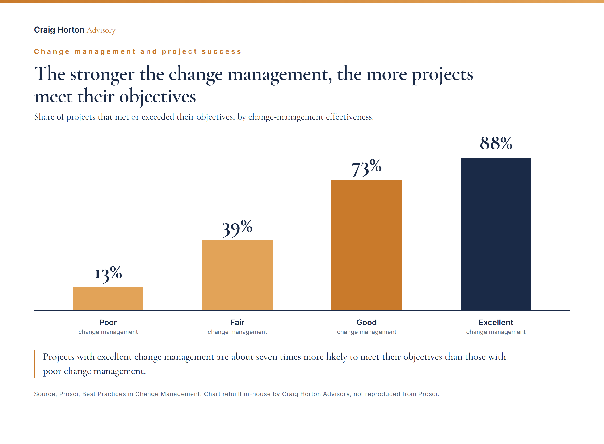

1
AI-attributed job cuts keep climbing, with the chief executives at JPMorgan, Citi and Goldman calling out AI directly as a driver of workforce reductions.Challenger and Insurance Journal, 2 July
Good morning. This week we are covering the real cost of replacing people with AI, the evidence that change management decides whether transformation pays, and the question no org chart answers, who owns the work when the workforce is part human, part agent.
AI-attributed job cuts keep climbing, with the chief executives at JPMorgan, Citi and Goldman calling out AI directly as a driver of workforce reductions.Challenger and Insurance Journal, 2 July
52% of North American employers are not yet using AI in HR in any form, while teams across APAC lead the way.HCA Mag, 2 July
The EU AI Act reaches employment on 2 August, bringing recruitment, screening and employment decisions under high-risk obligations.artificialintelligenceact.eu
Gartner warned CHROs this week about false savings, more than half of executives who replaced people with AI expect to regret that decision within 18 months, and almost a third of companies that cut roles have already hired them back. Prosci research shows the other half of the story, 88% of excellent change programmes met or exceeded their objectives, compared with just 13% of poor ones. Technology does not do the change by itself: you need to redesign your operating and business model, with clear guidelines, ownership and governance.

This week an agentic HR initiative for a billion-euro company was run through the AI BVF, and it came back as Fix, because there was no funded owner for the human side of the project. This is the same variable Prosci's chart measures, and the reason the AI BVF has Prosci benchmarks built into the code. The platform is open on the MCP registry as aibvf-mcp version 0.6.1, at github.com/Bahamas1717/ai-bvf.
Once again, I appreciate your interest and time to read this brief, and as always, look forward to your feedback and comments. Enjoy your weekend. Craig
The Transformation Brief · brief.craighortonadvisory.com · Archive
We used to call it, restructuring, reengineering or turnaround - but for sure, AI is and will always fundamentally change how business is conducted in order to keep pace with the clear move from linear models to systems of intelligence...